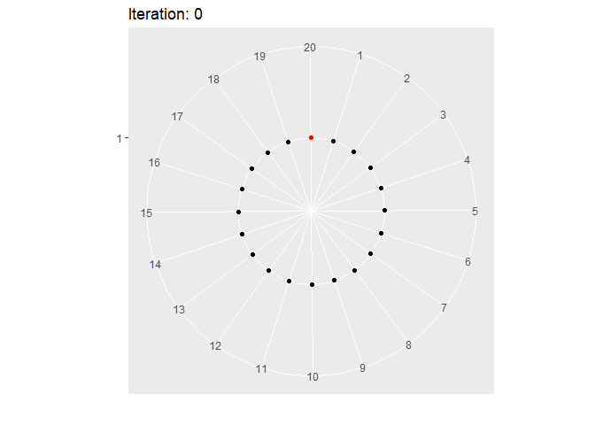

The following external R packages are used:
library(dplyr)
library(gganimate) # 'gifski' and 'png' package have to be installed
library(tidyr)
include_graphics <- knitr::include_graphics1. Introduction
This is to illustrate the “jumping frog” Markov chain 1 using gganimate package.
2. A jumping frog
Say there is a frog jumping across 20 lily pads numbered from 1 to 20 which are arranged clockwise in a circle. Suppose \(X_n\) is the pad number at the \(n\)th jump. Let’s define the “jumping frog” Markov chain \(\{ X_n \}_{n = 0}^{\infty}\) as a Markov chain whose state space is \(S = \{ 1, 2, \dots, 20\}\), with the initial state \(X_0 = 20\) and initial probabilities \(v_{20} = P(X_0 = 20) = 1\) and \(v_s = 0 \text{ }\) for all \(s = 1, \dots, 19\), and trainsition probabilities \(p_{ij} = P(X_n = j \text{ | } X_{n - 1} = i)= \frac{1}{3}\) whenever \(j = i - 1, i\), or \(i + 1\).
Long story short, a Java Applet regarding this frogwalk written by Prof. Rosenthal at the University of Toronto doesn’t work anymore. This is the effort to simulate this Markov chain using R and gganimate package.
With initial parameters below, we can simulate this Markov chain and populate X with some generated \(X_n\)’s:
set.seed(1024)
# Settings
max_iter <- 1000 # The maximum n
number_of_pads <- 20
initial_state <- 20
p_ij = rep(1, 3) / 3 # Prob of moving left, staying, and moving right
# Populate X
state_space <- 1:number_of_pads
cmf_p_ij = cumsum(p_ij)
X <- NULL
X[1] <- state_space[initial_state] # initial state
for (i in 2:(max_iter + 1)) {
choice <- runif(1) # choice ~ Unif(0, 1)
if (0 <= choice && choice < cmf_p_ij[1]) { # move left
if (X[i - 1] == number_of_pads) {
X[i] <- 1
} else {
X[i] <- X[i - 1] + 1
}
} else if (cmf_p_ij[1] <= choice && choice < cmf_p_ij[2]) { # stay
X[i] <- X[i - 1]
} else { # move right
if (X[i - 1] == 1) {
X[i] <- number_of_pads
} else {
X[i] <- X[i - 1] - 1
}
}
}state_df will be used to create a tibble that indicates the pad number the frog is located at each iteration. state_space will be used as x-axis, pads_point as y-axis (which is just a dummy), and iterations as a facetting variable:
state_df <- tibble(
iterations = rep(
0:max_iter,
each = number_of_pads
),
state_space = rep(state_space, max_iter + 1),
pads_point = rep(1, number_of_pads * (max_iter + 1))
)comparison_df is a tibble that acutally indicates where the frog is at at each iteration. state_space and iterations will be variables that state_df and comparison_df have in common, and value will be an indicator:
comparison_df <- tibble(state_space)
for (i in 1:(max_iter + 1)) {
mutating_code <- paste0(
"comparison_df <- comparison_df %>% ",
"mutate(`", i - 1, "` = state_space == X[i])"
)
eval(parse(text = mutating_code))
}
comparison_df <- comparison_df %>%
gather(iterations, value, -state_space) %>%
mutate(iterations = as.integer(iterations))We shall now left_join state_df and comparison_df using state_space and iterations columns, and create the whole states_df that is ready for generating a .gif file:
In our gganimate usage, we are basically creating a fast slide show of all the facets. iterations is our facetting variable, which is used in transition_time. Whenever the frog is located at the pad, the image will denote such a state with a red dot, and the rest of the pads will be coloured as black.
anim <- ggplot(
states_df,
aes(
x = factor(state_space), y = pads_point,
color = value
)
) +
geom_point() +
scale_color_manual(values = c("black", "red")) +
coord_polar(start = .15) +
labs(title = "Iteration: {frame_time}", x = "", y = "") +
theme(legend.position = "none") +
transition_time(iterations) +
enter_drift() +
exit_drift()
states_gif <- animate(
anim, fps = 20,
duration = 78,
start_pause = 2,
end_pause = 2
)
anim_save('frog.gif', states_gif)Here’s the .gif file:

Here’s a slower version (it takes a bit of time to load… 6 seconds?):
states_gif2 <- animate(
anim, fps = 20,
duration = 226,
start_pause = 2,
end_pause = 2
)
anim_save('frog_slower.gif', states_gif2)
include_graphics('frog_slower.gif')
If your sole purpose is to display, then saving the image file and using include_graphics() is unnecessary. For that purpose, you can just use animate().
Session info
R session info:
## R version 3.6.1 (2019-07-05)
## Platform: x86_64-w64-mingw32/x64 (64-bit)
## Running under: Windows 10 x64 (build 18362)
##
## Matrix products: default
##
## locale:
## [1] LC_COLLATE=English_Canada.1252
## [2] LC_CTYPE=English_Canada.1252
## [3] LC_MONETARY=English_Canada.1252
## [4] LC_NUMERIC=C
## [5] LC_TIME=English_Canada.1252
##
## attached base packages:
## [1] stats graphics
## [3] grDevices utils
## [5] datasets methods
## [7] base
##
## other attached packages:
## [1] tidyr_1.0.0
## [2] gganimate_1.0.4
## [3] ggConvexHull_0.1.0
## [4] dplyr_0.8.3
## [5] reticulate_1.13
## [6] pROC_1.15.3
## [7] ggrepel_0.8.1
## [8] ggplot2_3.2.1
## [9] funpark_0.2.6
## [10] data.table_1.12.6
## [11] boot_1.3-22
## [12] rmarkdown_1.17
## [13] magrittr_1.5
## [14] itertools2_0.1.1
##
## loaded via a namespace (and not attached):
## [1] progress_1.2.2
## [2] prettydoc_0.3.1
## [3] tidyselect_0.2.5
## [4] xfun_0.11
## [5] purrr_0.3.3
## [6] lattice_0.20-38
## [7] colorspace_1.4-1
## [8] vctrs_0.2.0
## [9] htmltools_0.4.0
## [10] yaml_2.2.0
## [11] utf8_1.1.4
## [12] rlang_0.4.2
## [13] pillar_1.4.2
## [14] glue_1.3.1
## [15] withr_2.1.2
## [16] tweenr_1.0.1
## [17] lifecycle_0.1.0
## [18] plyr_1.8.4
## [19] stringr_1.4.0
## [20] munsell_0.5.0
## [21] gtable_0.3.0
## [22] evaluate_0.14
## [23] labeling_0.3
## [24] knitr_1.26
## [25] gifski_0.8.6
## [26] fansi_0.4.0
## [27] Rcpp_1.0.3
## [28] readr_1.3.1
## [29] scales_1.1.0
## [30] backports_1.1.5
## [31] jsonlite_1.6
## [32] farver_2.0.1
## [33] gridExtra_2.3
## [34] png_0.1-7
## [35] hms_0.5.2
## [36] digest_0.6.23
## [37] stringi_1.4.3
## [38] grid_3.6.1
## [39] cli_1.1.0
## [40] tools_3.6.1
## [41] lazyeval_0.2.2
## [42] tibble_2.1.3
## [43] crayon_1.3.4
## [44] pkgconfig_2.0.3
## [45] zeallot_0.1.0
## [46] MASS_7.3-51.4
## [47] ellipsis_0.3.0
## [48] Matrix_1.2-17
## [49] prettyunits_1.0.2
## [50] xml2_1.2.2
## [51] assertthat_0.2.1
## [52] rstudioapi_0.10
## [53] iterators_1.0.12
## [54] R6_2.4.1
## [55] compiler_3.6.1Rosenthal, J. (2019, April 05). STA447/2006 (Stochastic Processes) Lecture Notes, Winter 2019. Retrieved May 21, 2019, from http://probability.ca/jeff/teaching/1819/sta447/notes.pdf↩